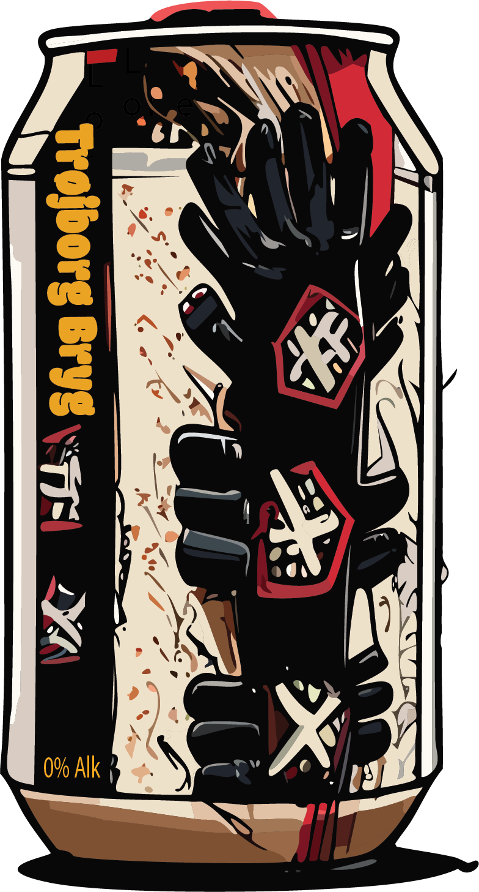
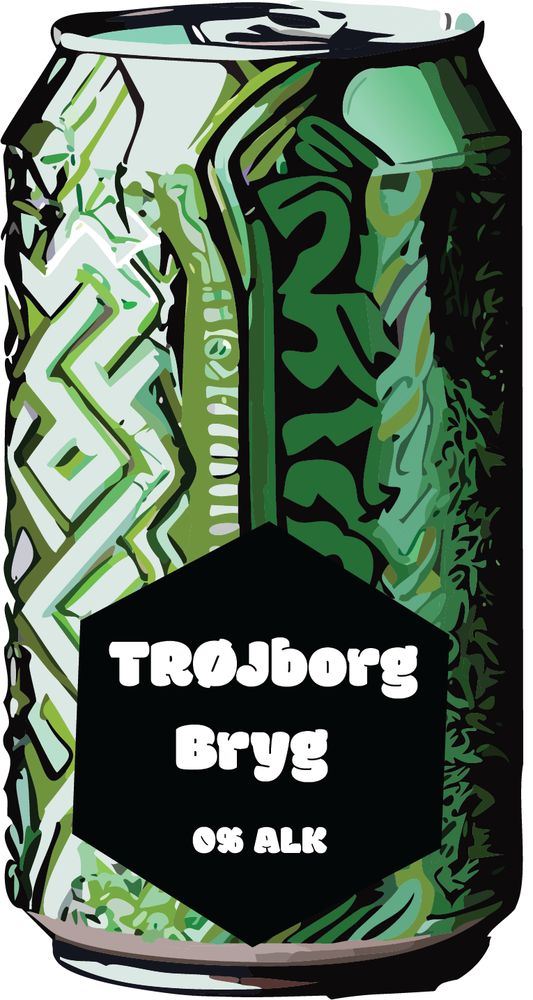
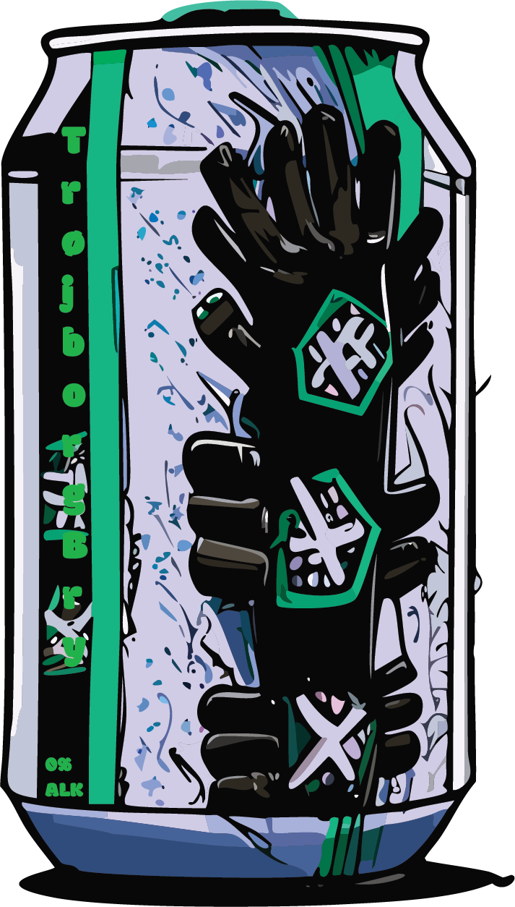
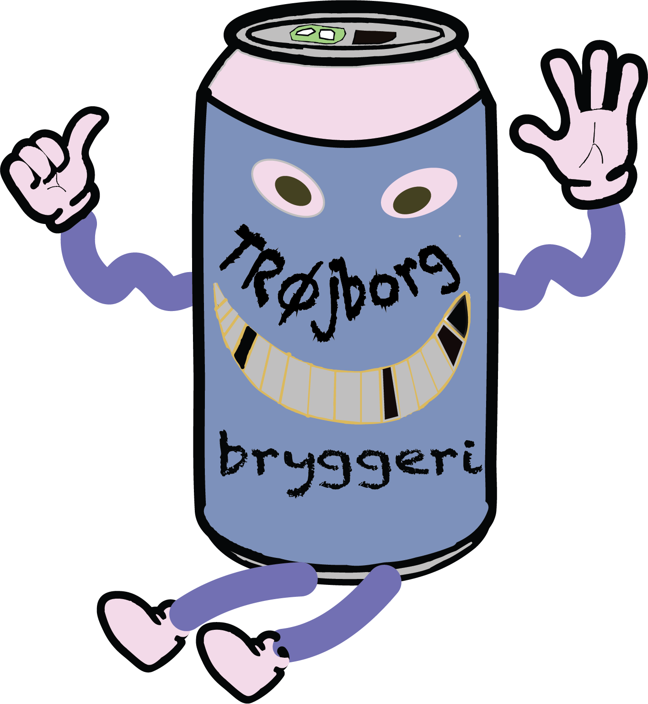

Smag vores nye Alkoholfri øl i forskellige varianter
Vi inviterer jer ind i en smagsfuld og sund verden af alkoholfri øl, hvor hver slurk er en rejse gennem flere nuancer og glæden ved fællesskab uden nogen promille. På denne hjemmeside dykker vi ned i de spændende aspekter af alkoholfri øl, inspireret af erfaringer fra mennesker som dig, der har opdaget skønheden i denne forfriskende alternativ.
Dyk ned i de sundhedsfordelagtige aspekter af alkoholfri øl, og opdag hvordan det passer ind i en aktiv og bevidst livsstil. Vi deler insiderviden om, hvordan alkoholfri øl kan være en givende del af din daglige rutine. Alkoholfri øl tilbyder en sundere drikkevaremulighed for dem, der ønsker at bevare en aktiv og bevidst livsstil. Med et lavt kalorieindhold og beriget med B-vitaminer fungerer den som en hydratiserende tørstslukker, ideel under træning. Indeholdende antioxidanter styrker den immunsystemet, samtidig med at den muliggør socialt samvær uden bekymring om alkoholens virkning. Integrer alkoholfri øl som en forfriskende og sund del af din daglige rutine.
hdhdh
lvnkjhssvkuh